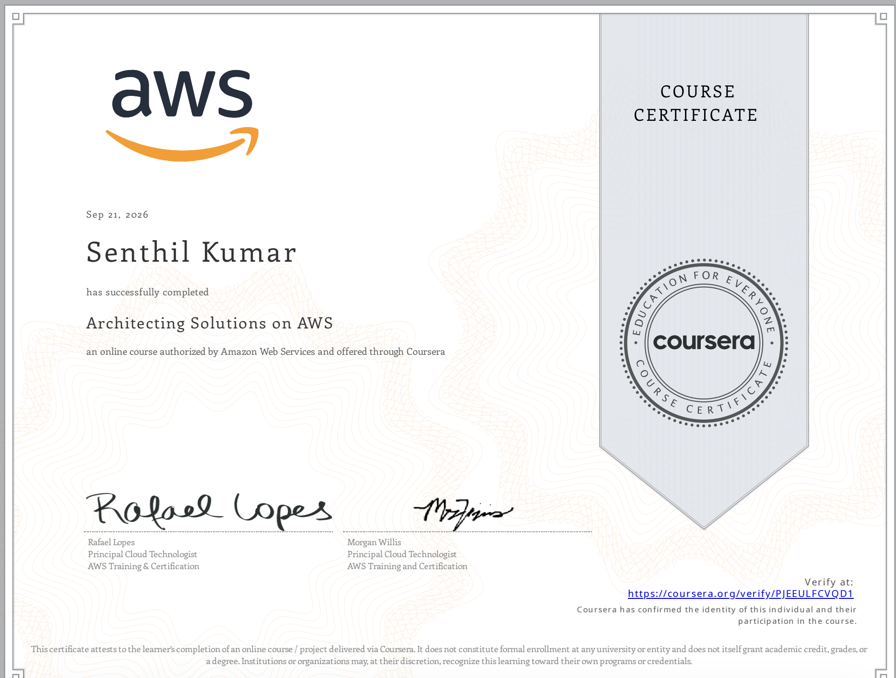

%%{init: {'theme': 'base', 'themeVariables': {'primaryColor': '#E3F2FD', 'primaryBorderColor': '#1E88E5', 'lineColor': '#424242', 'fontSize': '14px'}}}%%
flowchart LR
U[Customers] --> W[Web tier]
W --> O[Monolithic order service]
O --> M[(MySQL)]
O -.-> I[Inventory service]
O -.-> A[Accounting service]
O -.-> F[Fulfillment service]
subgraph InScope["In scope for Migration"]
W
O
M
end
subgraph OutOfScope["Out of scope"]
I
A
F
end
Architecting Solutions in AWS: Requirements to Justified Trade-offs.
From a customer’s requirements to a defensible AWS architecture
👈 Back to: 📝 Blog | 💼 LinkedIn | ✍️ Medium
❓ 1. Why this Book
Knowing what a service does is not the same as knowing when to choose it and what you must be prepared to defend once you have.
This is a companion to Foundational Questions. Visual Answers. Mastering AWS Fundamentals. That book builds the fundamentals, chapter by chapter: security, compute, networking, storage, databases, monitoring, optimization. This book assumes those fundamentals and asks a harder question: given a real customer’s requirements, how do you combine those building blocks into one architecture — and justify the services you rejected?
A companion blog post walks through this same way of thinking end to end: Thinking like a Cloud Architect.
📝 2. What this book covers
Every chapter follows the same workflow: requirements/problem understanding → architectural drivers → collect candidate services → compare trade-offs → finalize decision → justify rejections.
🧩 10. Architecting a Serverless Web Backend
- Problem: A monolithic, on-prem order service must become an auto-scaling, decoupled, serverless backend in the cloud
Before an Architect’s Intervention:
After an Architect’s Intervention:
%%{init: {'theme': 'base', 'themeVariables': {'primaryColor': '#E3F2FD', 'primaryBorderColor': '#1E88E5', 'lineColor': '#424242', 'fontSize': '14px'}}}%%
flowchart TD
FE["Frontend clients"] --> APIGW["API Gateway<br>auth, validation, throttling"]
APIGW --> SQS["SQS<br>buffer / decouple"]
SQS --> LAM["Lambda<br>order processing"]
LAM --> DDB["DynamoDB<br>orders"]
LAM -.->|"failures"| DLQ["Dead-letter queue"]
DDB --> STR["DynamoDB Streams"]
STR --> LAM2["Lambda<br>publisher"]
LAM2 --> SNS["SNS topic"]
SNS --> D1["Fulfillment"]
SNS --> D2["Accounting"]
SNS --> D3["Inventory"]
APIGW --> CW["CloudWatch + X-Ray<br>across all services"]
LAM --> CW
DDB --> CW
SNS --> CW
📊 11. Serverless Data Analytics
- Problem: A Static S3-hosted menus website needs a clickstream pipeline to be used along with it.
- This should turn a one-off request into a recurring ingest → store → query → visualise data pipeline.
- Such a Data Analytics pipeline gives insights to restaurant owners on analytics from customer preferences
Before an Architect’s Intervention:
%%{init: {'theme': 'base', 'themeVariables': {'primaryColor': '#E3F2FD', 'primaryBorderColor': '#1E88E5', 'lineColor': '#424242', 'fontSize': '14px'}}}%%
flowchart LR
C[Customer scans QR code] --> S3M["S3 static menu<br>HTML pages"]
S3M --> ORD["'Order this item'<br>feature"]
ORD -.-> PAY["Third-party payment API"]
S3M --> CLICK["Clickstream:<br>views + navigation"]
CLICK --> PIPE["Analytics pipeline<br>ingest, store, query, visualise"]
subgraph InScope["In scope<br>(newly added)"]
CLICK
PIPE
end
subgraph OutOfScope["Out of scope<br>(not touching for edit)"]
ORD
PAY
end
After an Architect’s Intervention:
%%{init: {'theme': 'base', 'themeVariables': {'primaryColor': '#E3F2FD', 'primaryBorderColor': '#1E88E5', 'lineColor': '#424242', 'fontSize': '14px'}}}%%
flowchart TD
USER["Customer<br/>scans QR code"]
subgraph SITE["Static Menu Website"]
EDGE["CloudFront distribution<br/><br/>protected by AWS WAF"]
MENU[("S3 private origin<br/><br/>HTML, CSS and JavaScript")]
BROWSER["Menu running in browser<br/>JS emits click events"]
EDGE -->|"Fetch static assets"| MENU
EDGE -->|"Serve menu application"| BROWSER
end
USER -->|"Request menu"| EDGE
subgraph PIPELINE["Serverless Clickstream Analytics Pipeline"]
AG["API Gateway<br/><br/>HTTPS, throttling and abuse control"]
KDF["Amazon Data Firehose<br/><br/>Direct PUT, buffering,<br/>JSON to Parquet"]
subgraph LAKE["S3 Data Lake"]
DATA["Parquet data<br/>Hive-style prefixes"]
ERR["Error output prefix"]
end
REPLICA[("S3 replica bucket<br/><br/>Second Region")]
GDC["Glue Data Catalog<br/><br/>Table schema and partitions"]
ATH["Amazon Athena<br/><br/>SQL on S3"]
SPICE[("QuickSight SPICE<br/><br/>In-memory dataset")]
QS["QuickSight Dashboards"]
BROWSER -->|"Click events"| AG
AG --> KDF
GDC -.->|"Schema for<br/>Parquet conversion"| KDF
KDF --> DATA
KDF -.->|"Failed records"| ERR
DATA -->|"Asynchronous CRR<br/>with versioning"| REPLICA
GDC -.->|"Table metadata"| ATH
DATA --> ATH
ATH -->|"Dataset ingestion<br/>and scheduled refresh"| SPICE
SPICE --> QS
end
subgraph OBS["Cross-Cutting Observability"]
CW["Amazon CloudWatch<br/><br/>Metrics, logs and alarms"]
SNS["Amazon SNS<br/>Operational notifications"]
CW --> SNS
end
AG -.->|"Count, 4XX, 5XX, latency"| CW
KDF -.->|"Delivery success,<br/>freshness and throttling"| CW
REPLICA -.->|"Replication lag"| CW
ATH -.->|"Failures and bytes scanned"| CW
SPICE -.->|"Ingestion or refresh failures"| CW
IAC["CloudFormation<br/>provisions the architecture"] -.-> SITE
IAC -.-> PIPELINE
IAC -.-> OBS
🔗 12. Hybrid, Container-Based Workloads
- Problem: Half a company’s workloads stay on-premises, half move to AWS.
- Need: Connecting the On-prm Data Center with AWS infra, keeping containers portable, and migrating a database with near-zero downtime.
Before an Architect’s Intervention:
%%{init: {'theme': 'base', 'themeVariables': {'primaryColor': '#E3F2FD', 'primaryBorderColor': '#1E88E5', 'lineColor': '#424242', 'fontSize': '14px'}}}%%
flowchart LR
subgraph DCn["Data centre (contracts<br>expiring in waves)"]
direction TD
C1["Containerised apps"]
DB1["PostgreSQL"]
C1 <--> DB1
end
After an Architect’s Intervention (simple version):
%%{init: {'theme': 'base', 'themeVariables': {'primaryColor': '#E3F2FD', 'primaryBorderColor': '#1E88E5', 'lineColor': '#424242', 'fontSize': '14px'}}}%%
flowchart LR
subgraph DCn["Data centre (contracts<br>expiring in waves)"]
direction TD
C1["Containerised apps"]
DB1["PostgreSQL"]
C1 <--> DB1
end
DCn <-->|"dedicated, low-latency link"| AWS
subgraph AWS["AWS (half the workloads)"]
C2["Containers<br>private, outbound only"]
DB2["PostgreSQL<br>lift-and-shift, no rewrite"]
NFS["Data over NFS<br>no refactor"]
end
C1 -.->|"same orchestration tooling"| C2
DB1 -.->|"no app code rewrite"| DB2
After an Architect’s Intervention (detailed version):
%%{init: {'theme': 'base', 'themeVariables': {'primaryColor': '#E3F2FD', 'primaryBorderColor': '#1E88E5', 'lineColor': '#424242', 'fontSize': '14px'}}}%%
flowchart LR
subgraph DCn["On-Premises"]
OC["Containers<br>ECS Anywhere"]
ODB["PostgreSQL"]
OFS["NFS-mounted File Share"]
SGW["S3 File Gateway<br>local cache"]
OFS --> SGW
end
DCn <==>|"Direct Connect<br>plus VPN failover"| AWS
subgraph AWS["AWS Cloud VPC"]
subgraph A1["AZ 1"]
ECS1["ECS on EC2<br>private subnet"] --> NAT1["NAT gateway 1"]
end
subgraph A2["AZ 2"]
ECS2["ECS on EC2<br>private subnet"] --> NAT2["NAT gateway 2"]
end
VPE["VPC endpoints<br>ECR, SSM, S3, Logs"]
RDS["RDS PostgreSQL<br>Multi-AZ + read replica"]
S3["Amazon S3<br>Intelligent-Tiering"]
ECS1 --> RDS
ECS2 --> RDS
ECS1 -.-> VPE
ECS2 -.-> VPE
SGW -.->|async| S3
end
ODB -.->|"DMS data + pg_dump schema"| RDS
OPS["ECS Anywhere · Systems<br>Manager · AWS Backup"] -.-> DCn
OPS -.-> AWS
CW["CloudWatch: connection state, tunnel state,<br>task counts, replica lag, cache lag"] -.-> AWS
🏛️ 13. Account Governance and Multi-Account Management
- Problem: A single, unmanaged AWS account has to become a governed multi-account structure — with automatic provisioning, single sign-on, central logging and guardrails.
Before an Architect’s Intervention:
%%{init: {'theme': 'base', 'themeVariables': {'primaryColor': '#E3F2FD', 'primaryBorderColor': '#1E88E5', 'lineColor': '#424242', 'fontSize': '14px'}}}%%
flowchart LR
subgraph Before["Single account (today)"]
ROOT["root + unmanaged IAM users"] --> W1["Client A website"]
ROOT --> W2["Client B website"]
ROOT --> W3["Client C website"]
end
After an Architect’s Intervention (simple version):
%%{init: {'theme': 'base', 'themeVariables': {'primaryColor': '#E3F2FD', 'primaryBorderColor': '#1E88E5', 'lineColor': '#424242', 'fontSize': '14px'}}}%%
flowchart LR
subgraph Before["Single account (today)"]
ROOT["root + unmanaged IAM users"] --> W1["Client A website"]
ROOT --> W2["Client B website"]
ROOT --> W3["Client C website"]
end
Before -->|"re-architect"| After
subgraph After["Multi-account (goal)"]
SSO["Single sign-on"] --> ACCA["Client A account"]
SSO --> ACCB["Client B account"]
SSO --> ACCC["Client C account"]
ACCA --> LOG["Dedicated logging account"]
ACCB --> LOG
ACCC --> LOG
GR["Guardrails +<br>enforced tagging"] -.-> ACCA
GR -.-> ACCB
GR -.-> ACCC
end
After an Architect’s Intervention (detailed version):
%%{init: {'theme': 'base', 'themeVariables': {'primaryColor': '#E3F2FD', 'primaryBorderColor': '#1E88E5', 'lineColor': '#424242', 'fontSize': '14px'}}}%%
flowchart TD
subgraph Org["AWS Organization -<br>all features enabled"]
MGMT["Management account<br>Control Tower, org CloudTrail, billing<br>NO workloads"]
subgraph SecOU["Security OU"]
LOGACC["Log Archive account<br>central CloudTrail and Config"]
TOOL["Security Tooling account<br>delegated admin: GuardDuty,<br>Config, Security Hub"]
end
SS["Shared Services account<br>delegated IAM Identity Center admin"]
subgraph WL["Workloads OU"]
subgraph CustA["Customer A OU"]
DEVA["Dev"]
PRDA["Prod"]
end
end
end
USER["Workforce"] -->|SSO portal| SS
SS -->|permission sets| DEVA
SS -->|permission sets| PRDA
MGMT -->|SCP guardrails| WL
DEVA -->|logs| LOGACC
PRDA -->|logs| LOGACC
TOOL -->|findings| SEChub["Security Hub"]
🎯 14. Capstone: Decoupled App + EMR Analytics
Problem:
- One customer, migrate two workloads to cloud at once:
- decoupling a three-tier app and
- re-platforming a Hadoop estate onto Amazon EMR
- This capstone effort reuses the patterns from Chapters 10-12 together.
Before an Architect’s Intervention:
%%{init: {'theme': 'base', 'themeVariables': {'primaryColor': '#E3F2FD', 'primaryBorderColor': '#1E88E5', 'lineColor': '#424242', 'fontSize': '14px'}}}%%
flowchart LR
subgraph OnPrem["On-premises today<br>one data centre, one power feed"]
FE1["Frontend<br>HTML/CSS/JS"] --> BE1["Backend<br>Apache + Java"]
BE1 --> DB1[("MySQL")]
HAD["Hadoop cluster<br>+ visualisation tools"]
end
%% OnPrem -->|"decouple + migrate"| Cloud
%% subgraph Cloud["Goal: on AWS"]
%% FE2["Frontend tier"]
%% BE2["Backend tier"]
%% DB2[("Database tier")]
%% EMR2["EMR analytics<br>tier"]
%% end
After an Architect’s Intervention (simplified version):
%%{init: {'theme': 'base', 'themeVariables': {'primaryColor': '#E3F2FD', 'primaryBorderColor': '#1E88E5', 'lineColor': '#424242', 'fontSize': '14px'}}}%%
flowchart LR
subgraph OnPrem["On-premises today<br>one data centre, one power feed"]
FE1["Frontend<br>HTML/CSS/JS"] --> BE1["Backend<br>Apache + Java"]
BE1 --> DB1[("MySQL")]
HAD["Hadoop cluster<br>+ visualisation tools"]
end
OnPrem -->|"decouple + migrate"| Cloud
subgraph Cloud["Goal: on AWS"]
FE2["Frontend tier<br>CloudFront-WAF-S3"]
BE2["Backend tier<br>ALB-<br>ECS_on_Fargate"]
DB2[("Database tier")]
EMR2["EMR analytics<br>tier"]
end
After an Architect’s Intervention (detailed version):
Application tier on AWS
%%{init: {'theme': 'base', 'themeVariables': {'primaryColor': '#E3F2FD', 'primaryBorderColor': '#1E88E5', 'lineColor': '#424242', 'fontSize': '14px'}}}%%
flowchart LR
USERS["Internet users"] --> CF["CloudFront + WAF"]
CF -->|"static"| S3F["S3<br>frontend"]
CF -->|"dynamic"| ALB["Application<br>Load Balancer"]
ALB --> ECS["ECS on Fargate<br>Java backend"]
ECS --> RDS[("RDS for MySQL<br>Multi-AZ")]
OnPremMySQ[("On-prem MySQL")] --> DMS["AWS DMS"] -->|"migrate<br>Full load or<br>Changed Data"| RDS
Analytics tier on AWS
%%{init: {'theme': 'base', 'themeVariables': {'primaryColor': '#E3F2FD', 'primaryBorderColor': '#1E88E5', 'lineColor': '#424242', 'fontSize': '14px'}}}%%
flowchart LR
ONPREM["On-prem HDFS<br>dataset"] -->|"bulk seed"| SNOW["Snowball Edge"]
ONPREM -->|"ongoing"| DS["AWS DataSync"]
SNOW --> S3R["S3 raw zone"]
DS --> S3R
S3R -->|"EMRFS"| EMR["Amazon EMR<br>transient cluster"]
EMR --> S3C["S3 curated zone"]
S3C --> GDC["Glue Data Catalog"]
GDC --> ATH["Amazon Athena"]
S3C --> ATH
ATH --> QS["Amazon QuickSight"]
📜 3. Source & Attribution
The intuition and examples in this book are inspired by the Architecting Solutions in AWS Coursera course.
